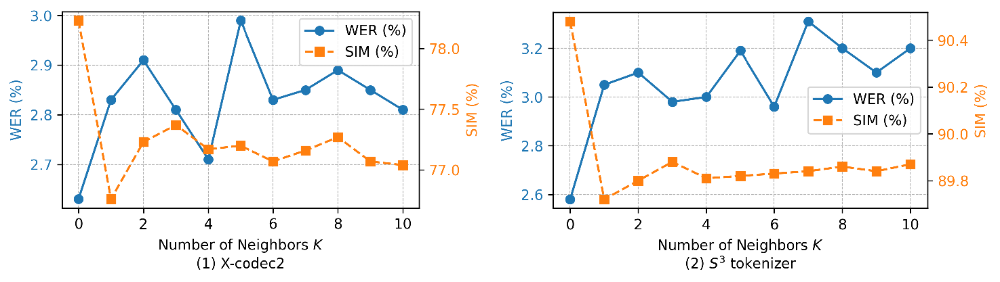
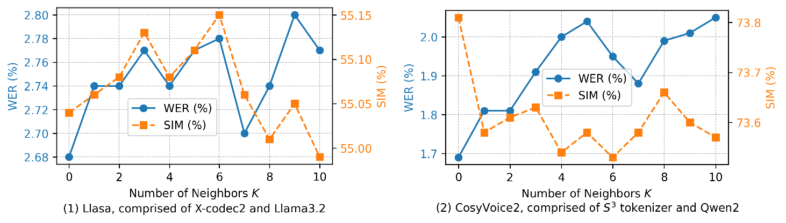

Improving Speech Generation via Multi-Neighbor Token Prediction for Neural Codec Language Models
Abstract. Inspired by Large Language Models (LLMs), codec-based TTS systems have achieved remarkable
success in high-fidelity speech generation by directly adopting the standard Cross-Entropy (CE) objective to
predict sequences of discrete speech tokens from neural audio codecs. However, this practice overlooks the
geometric structure of codec token spaces: tokens that are close in the codec codebook embedding space often
correspond to acoustically similar speech realizations and can serve as perceptually plausible alternatives. We
term this observation the Neighboring Token Phenomenon. The one-hot CE objective is agnostic to such
structure, as it penalizes all non-target tokens equally, including these close neighbors, creating a mismatch
between the structured codec latent space and the learning objective. In this paper, we quantitatively analyze the
neighboring token phenomenon in both reconstruction and generation settings. To address the mismatch, we propose
Multi-Neighbor Cross-Entropy (MNCE) loss function, which generalizes the one-hot target of CE loss into a
positive set containing the ground-truth token and its nearest neighbors, encouraging the model to treat neighbor
predictions as partially correct. As a result, even when the model misses the exact target token, it is more
likely to predict a close neighbor rather than an unrelated token, reducing perceptually harmful errors in
synthesized speech. Experiments demonstrate that MNCE is effective and generalizable across diverse codec-based
TTS systems, improving quality and robustness. Moreover, scaling training to 20,000 hours further validates the
scalability of our approach.
Table of Contents
Preliminaries: Overall Pipeline of Codec-based TTS and MNCE Loss

Figure: Overall Pipeline of Codec-based TTS.
As shown in the figure above, we follow the VALL-E-style
zero-shot TTS setup during training and inference. This work focuses on improving the CE loss function rather than
modifying the model
architecture of any existing TTS system.
To help non-TTS readers quickly grasp the framework, we illustrate
the general codec-based TTS pipeline:
1. When using WavTokenizer or X-codec2 as the speech tokenizer, the TTS task
requires a language model (LM) to autoregressively generate speech tokens from text and a speech prompt, which
are then directly reconstructed into audio.
2. In contrast, when using the S³ tokenizer, the pipeline relies on additional components: a
speaker extractor to derive speaker embeddings from the speech prompt, a flow matching module, and a mel-based
vocoder, as described in CosyVoice2.
Although these two type of codec-based TTS architectures differ
in their decoding paths, both use the standard CE loss during LM training. This is exactly where our proposed MNCE
loss makes targeted improvements to better leverage the neighborhood structure of speech tokens.

Figure: Comparison between CE loss and MNCE loss.
CE designates the single ground-truth token as a solitary
point-like positive target and imposes uniform penalties on all non-target tokens, including acoustically similar
neighboring tokens, completely ignoring the geometric structure of the token space.
MNCE, by contrast, leverages the geometric similarity of token embeddings to integrate the ground-truth token and
its neighboring tokens into a regional positive set, only imposing penalties on irrelevant tokens outside this set
and enabling the model to treat acoustically similar neighboring tokens as partially correct predictions.
1. Analysis of Neighboring Token Phenomenon in Codec-based TTS

Figure 1: Impact of Neighbor Substitution with Probability
r = 0.25 on the Speech Reconstruction Task. K = 0 indicates that the original token is kept
unchanged. As K increases, the original token can be replaced by more distant neighbors, which moderately
increases WER while keeping SIM changes within a narrow range.

Figure 2: Impact of Neighbor Substitution with Probability
r = 0.25 on the Speech Generation Task. Across codec-based TTS systems, substituting tokens with their
neighbors leads to small changes in WER and SIM, suggesting that neighboring tokens are perceptually plausible
alternatives, validating the neighboring token phenomenon.
From above 2 figures, we can draw the following conclusions:
Speech Reconstruction. Figure 1 indicates that
codec
reconstruction is only mildly affected by neighbor substitution under a token substitution probability of r
= 0.25. For both X-codec2 and S3 tokenizer, WER gradually increases with minor fluctuations as
K grows, since more distant neighbors can replace the original tokens and slightly degrade audio quality.
SIM follows a similar trend: a slight decrease at small K, a modest recovery, and then a slow drift towards
a stable and slightly worse SIM. Overall, enlarging the neighbor set leads to progressive but small degradations
in WER and SIM, suggesting that neighboring tokens are perceptually valid substitutes for reconstruction.
Speech Generation. As shown in Figure 2, speech
generation exhibits similarly small changes with increasing K under the substitution probability r =
0.25. For both Llasa and CosyVoice2, WER and SIM vary only slightly up to K = 10, supporting the conclusion
that neighboring tokens are acoustically plausible alternatives for language-model-predicted sequences.
Interestingly, the degradation in speech generation is smaller than that in speech reconstruction. For example,
with S3 tokenizer, increasing K from 0 to 10 raises reconstruction WER from 2.58 to 3.20
(absolute +0.62) and decreases SIM from 90.48 to 89.87 (absolute -0.61). In contrast, for speech generation, WER
increases from 1.69 to 2.05 (absolute +0.36) and SIM decreases from 73.81 to 73.57 (absolute -0.24). This may be
due to higher tolerance in generation, since swapping a token to an acoustically similar neighbor introduces only
a small change and the inference stage already uses stochastic sampling that is robust to such variations.
These results confirm: (1) neighboring token
phenomenon exists not only in the codec but also in the neural codec language model trained upon it, spanning the
entire codec-based TTS system; (2) tokens can be substituted by near neighbors with negligible perceptual impact.
These observations motivate our new training objective that accounts for neighboring tokens, rather than treating
all non-target tokens as equally incorrect.
2. Speech Generation Results on LibriSpeech-PC test-clean
We present speech generation samples from diverse codec-based TTS systems using WavTokenizer, X-codec2, and the
S3 tokenizer. For each setup, we train two codec language models with the same architecture: one
with the standard cross-entropy (CE) loss, and one with the proposed Multi-Neighbor Cross-Entropy (MNCE) loss, and
provide side-by-side comparisons. The superscript \( \text{MNCE} \) indicates the neural codec language model
trained with \( \text{MNCE} \)
loss, and the subscripts, such as \( \text{960h} \), denote the training data scale.
Loading table data, please wait...
3. Speech Generation Results on SEED test-en
We present speech generation samples from open-source TTS systems, including variants trained with the
proposed MNCE (Multi-Neighbor Cross-Entropy) loss. Our reproduced CosyVoice2 system uses the S3
tokenizer and a
Qwen2.5-0.5B-based neural codec language model. The superscript \( \text{MNCE} \) indicates the neural codec
language model
trained with \( \text{MNCE} \) loss, and the subscripts, such as \( \text{20Kh} \),
denote the training data scale.
Loading table data, please wait...
4. Results on Long-context Speech Generation
We test long-speech generation on LibriSpeech-Long, and the results are shown in the below table. The superscript
\( \text{MNCE} \) indicates the neural codec language model
trained with \( \text{MNCE} \)
loss, and the subscripts, such as \( \text{960h} \), denote the training data scale.
Loading table data, please wait...
5. More Samples
We present additional samples from the LibriSpeech test-clean set to illustrate how MNCE improves upon the
baseline CE results. The superscript \( \text{MNCE} \) indicates the neural codec language model
trained with \( \text{MNCE} \) loss, and the subscripts, such as \( \text{20Kh} \), denote the training data
scale.
Loading table data, please wait...